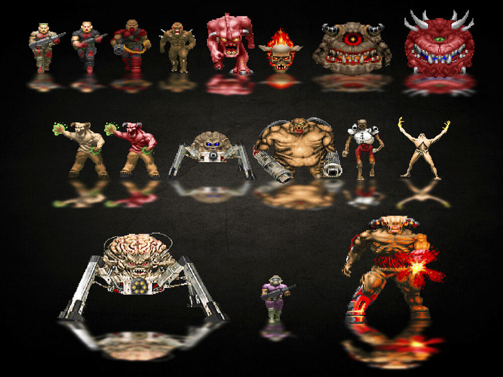
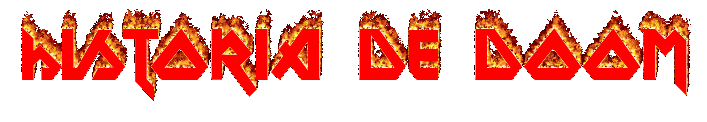

CONOCIENDO LOS DEMONIOS
Los monstruos de Doom se pueden clasificar en dos grandes grupos:
los antiguos humanos que han sido poseídos por fuerzas demoníacas
y los monstruos demoníacos o engendros del infierno (hellspawn), que
se originan en el mismo infierno o llegan desde allí.
Una clase particular de estos últimos son los Jefes, un personaje
particularmente grande o difícil que debe ser derrotado al final
de un segmento de un juego, ya sea en un nivel, un episodio o el
final del juego en sí.


Doom Guy
Doom (1993)
La historia que comenzó todo. Nuestro protagonista es uno de los
más fuertes y mejor entrenados marines de la Tierra. Pero hubo
un desafortunado suceso en el que un oficial quería obligar a
sus soldados a disparar a unos manifestantes y éste le golpeó.
Por este motivo, sus superiores decidieron llevarlo a una base
de Marte de la UAC (Union Aerospace Corporation) como casi un
simple guarda de seguridad.

Phobos y Deimos, las lunas de Marte, también tenían parte de la
instalación de investigación de la UAC, pero de repente una retransmisión
desde Phobos informaba del ataque de unas criaturas desconocidas
que estaban arrasando con toda vida humana a su paso.
Un gran estruendo precedió al ataque y de repente, Deimos,
la otra luna, había desaparecido.
Mandaron a toda la unidad de marines a Phobos y excepto
nuestro protagonista, que se quedó custodiando la puerta,
entraron todos con las armas más potentes. Poco tiempo pasó hasta
que el marine decidió llamar a sus compañeros y descubrir que su
aterrador fin estaba cerca: Gritos, sonido de carne desgarrándose
y un sepulcral silencio, hicieron que no tuviera más remedio que
internarse en la base el solo.
Después de casi limpiar la base de demonios, el marine consigue
dar con el origen de la invasión, un poderoso engendro llamado
Spider Mastermind, que al morir, cierra consigo un portal al
mismísimo Infierno. Doom Guy ha acabado con la invasión y se
dirige de vuelta a la tierra. Pero, aún no ha acabado la
pesadilla… cuando llega allí espera encontrarse de nuevo con
Daisy, su conejo mascota, pero desgraciadamente la Tierra
también ha sido invadida y la cabeza de su mascota, mancha
grotescamente de sangre la punta de una estaca.
Doom II: Hell on Earth (1994)
La tierra está en caos, la mayoría de las ciudades han sido
invadidas y las ruinas esconden a los restantes humanos que
quieren escapar en naves para evacuar el planeta.
El comienzo de Doom 2 ya da por perdido el planeta y lo
único que queda es poder salvar a todos los civiles posibles.
Por eso, nuestro Doom Guy, el marine mejor entrenado del
planeta, decide limpiar y desinfectar de demonios la estación
espacial que guarda las naves debido a que una fuerza oculta
genera un escudo que impide hacerlo.

Finalmente lo consigue y las naves escapan, pero su tarea no
acaba aquí. Por lo visto, el origen de la invasión está en su
ciudad natal, así que se desplaza hacía allí, donde encuentra
por fin la puerta al infierno, en el que se adentra para
acabar con lo que sea que está generando el portal.
Se trata de el Icono del Pecado o Icon of Sin, un enorme
enemigo que no resulta muy dificil de derrotar y que en
su caída provoca el cese de la invasión.
Al fin, la tierra está a salvo y la brecha del infierno contenida.
Doom 3 (2004)
Casi 7 años después de la última entrega y con un escenario
completamente distinto, Doom 3 se presenta como un reboot de
la saga.
La acción se desarrolla en Marte, y en esta ocasión si que
tenemos una trama bien desarrollada plagada de cinemáticas
que al menos, intentan explicar algo más lo sucedido.
Sin embargo, una vez más, no hay una conexión oficial con Doom Guy.
Pero hay una excepción: En Resurrection of Evil aparecen
unas tablillas con la imagen de un legendario guerrero,
que es claramente la figura del Doom Guy clásico, por
lo que hay teorías que hablarían de que esta es una
dimensión diferente en la que el Infierno también intenta
invadir nuestro universo, en la que todo tendría sentido.

La UAC está instalada en el planeta rojo en lo que llaman Mars City,
una ciudad entera dedicada a la minería y la extracción de recursos,
pero parece que los experimentos también están a la orden del día.
Nuestro protagonista, el Marine sin nombre, llega a la estación
para ocupar su puesto correspondiente, pero pronto se desencadena
lo inevitable. Un fallo crítico en la instalación desencadena
una ola de energía que comienza a transformar a todos los
habitantes en engendros demoníacos y nuestro protagonista
intentará escapar de allí matando a todo lo que encuentra a su paso.
A lo largo de la aventura, que nos llevará por toda la instalación
descubriremos unas excavaciones en las que habían descubierto
una especie de civilización antigua extinguida hace milenios y
que vivía en la propia Marte. Eran tecnológicamente avanzados y
gracias a ellos la UAC descubrió la teleportación.
Desgraciadamente, estos portales parecen de alguna manera
conectados con un lugar desconocido del que todos vuelven
locos y con ansias suicidas.
Finalmente, ante la inminente llegada de refuerzos,
el marine ve las intenciones de los demonios de usar
las naves para invadir la tierra, ayudados por el Doctor
Betruger, el científico encargado de la instalaciones, lo que
le lleva a encargarse el mismo de acabar con la invasión,
entrando en el Infierno, donde termina con un enorme CyberDemon,
que contiene en su interior el Cubo de las Almas, un artefacto
marciano con el poder para cerrar estas brechas. El marine lo
consigue y el equipo de rescate lo encuentra, resultando
ser el único superviviente.
Doom Slayer
DOOM (2016)
Despertamos en un sarcófago, una especie de zombie nos ataca e
instintivamente lo matamos con facilidad. Ahora ya no somos un
marine cualquiera. Los demonios solo pudieron encerrarnos en un
ataud y escondernos en un rincón del infierno, poniendo nuestro
símbolo grabado para que nadie se atreviera jamás a liberarnos.
Ellos fueron los que nos pusieron el nombre, Doom Slayer,
el Cazador del Infierno. Pero ahora, somos libres de nuevo.
Libres para seguir matando y destrozando demonios.
Es nuestro deber.

Pero centrémonos en este artículo, porque la historia completa
del Doom Slayer la contaremos más adelante, ya que merece un
texto por sí solo. Estamos en Marte, la UAC, de nuevo,
ha montado una mega instalación con decenas de miles de
trabajadores, pero la invasión demoníaca ya está en curso,
como nos indica la propia IA que lleva el sitio, VEGA.
Entre ella y el doctor Samuel Hayden nos guiarán para intentar
salvar lo que queda de la base. Con nuestro traje de Pretor,
avanzaremos buscando desactivar la Torre Argent, que es el
origen del propósito de la UAC en el planeta.
Con una tierra sin recursos, la energía Argent supone un
enorme avance para la civilización, pero lo que nadie
sabía es que esta energía se extraía precisamente del Infierno.
Es la doctora Olivia Pierce la encargada de los experimentos
en Marte, la que paralelamente y sin el conocimiento de
Samuel Hayden, comienza a montar todo un culto religioso en el
que incluso los humanos se ofrecen como sacrificio, creyendo a
los seres del Infierno como una nueva deidad que los salvará a todos.
La Torre Argent es precisamente la que guarda una nueva puerta
al Infierno, por la que el Doom Slayer entra para descubrir como
parar la invasión. Allí encuentra los testamentos, que le
revelarán que no sólamente es un guerrero legendario, si no
que es o fue el líder de una raza o civilización de combatientes
llamada los Centinelas de la Noche (Night Centinels).
Con la ayuda del Crisol y manipulado por Hayden, el Doom
Slayer consigue acabar con un enorme CyberDemon y en última
instancia, con la propia Olivia Pierce, que tras su llegada
al infierno revela su verdadera cara, la Spider Mastermind,
el último boss del juego.

Lo último que veremos es a Samuel Hayden diciéndonos que el no
es el malo, y que todo lo que está haciendo es por una buena
causa. Pero atrapará al Doom Slayer y mientras se despide,
parece lanzarlo de nuevo a otra dimensión, que no conocemos.
DOOM Eternal (2020)
Dos años después de los sucesos de DOOM 2016, seguimos encarnando
al Doom Slayer, pero debido a que este título no está disponible
aún a fecha de hoy, de momento, no sabemos que ha pasado
exactamente entre una entrega y otra. Lo que si sabemos es
que la Tierra ha sido invadida completamente por demonios.
En sólo un día, consiguieron masacrar al 60% de la población
humana, las fuerzas militares lograron hacerle frente durante
unos meses, pero los múltiples portales abiertos seguían trayendo
más y más enemigos imparables.

Desde una fortaleza que orbita la Tierra, el protagonista se
desplegará por distintos lugares en búsqueda de unos sacerdotes
que controlan los portales claves para terminar con la invasión,
conviertiéndose en nuestro objetivo principal. Pero el planeta
azul no será el único destino que visitaremos. Marte, la base de
los Centinelas Nocturnos, e incluso ¿el cielo? Deberemos de
averiguar que hay detrás de esta invasión en la que parece haber
más en juego que la simple destrucción.
Ya hay teorías que afirman que el culto religioso generado en
Marte se replicó en la Tierra, el cual ayudó a abrir el primer
portal allí, ya que el infierno de por sí no era capaz de hacerlo
sin ayuda, por eso precisamente en el primer trailer del juego se
oye por los altavoces una voz diciendo que nos calmemos, que lo
que estamos viendo es completamente normal. Hay muchas sorpresas
que nos esperan sobre la historia que desconocemos y según Hugo
Martin, todos los fans tendrán lo que buscaban.
The doom slayer, assasing the demmon invasion